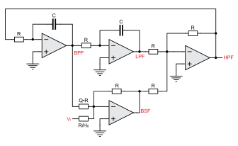

Second order filters (or biquard filters) are important since they are the building blocks in the construction of \(N^{th}\) order filters, for \(N > 2\). When \(N\) is odd, the \(N^{th}\) order filter can be realized using \(N - 1\) second order filters and one first order filter. When \(N\) is even, we need \(N-1\) second order filters.
Second order filter can be used to construct four different types of filters. The transfer functions for the different filter types are shown in Section 2.1.1, where \(f_0 = \frac{1}{2 \pi RC}\) and \(H_0\) is the low frequency gain of the transfer function. The filter names are often abbreviated as LPF (lowpass filter), HPF (highpass filter), BPF (bandpass filter), and BSF (bandstop filter).
In this experiment, we will describe a universal active filter, which provides all four filter functionalities. Figure 2.1 shows a second order universal filter realized using two integrators. Note that there are different outputs of the circuit that realize LPF, HPF, BPF and BSF functions.

Figure 2.1: A second-order universal active filter
2.2 Specification
Design a band-pass (BPF) and a band-stop (BSF) filter. * For the BPF, assume \(f_0 = 1\,kHz\) and \(Q=1\). * For the BSF, assume \(f_0 = 10\,kHz\) and \(Q=10\).
2.3 Measurements to be taken
2.3.1 Steady-state response
Apply a square wave input (Try \(f\) = 1 kHz and \(f\) = 10 kHz to both BPF and BSF circuits and observe the outputs.
Band-pass output will output the fundamental frequency of the square wave multiplied by the gain at the centre frequency. The amplitude at this frequency is given by \(\frac{4 V_p}{\pi H_0 Q}\), where \(V_p\) is the peak amplitude of the input square wave.
The band-stop filter’s output will carry all the harmonics of the square wave, other than fundamental. This illustrates the application of BSF as a distortion analyzer.
2.3.2 Frequency response
Apply a sine wave input and obtain the magnitude and the phase response.
2.4 What you should submit
2.4.1 Simulation with KiCad (ngspice)
Simulate the circuits and obtain the steady-state response and frequency response.
2.4.2 Measurements with Redpitaya STEMlab
Take the plots of the steady-state and frequency response with STEMlab oscilloscope or SCPI and compare it with simulation results. For frequency response, apply a sine wave input and vary its input frequency to obtain the phase and magnitude error.
2.4.2.1 SCPI mit Python
#!/usr/bin/env python3# -*- coding: utf-8 -*-"""Measurements for Bode plotsInput signal: DF_IN1Output signal: DF_IN2@author: Mirco Meiners (HSB)"""# %% Initimport time# from datetime import datetimeimport redpitaya_scpi as scpiimport numpy as npimport pandas as pdimport scipy.io as sioimport matplotlib.pyplot as plt# %% Connection params# IP of your STEMlabIP ='192.168.111.182'rp_s = scpi.scpi(IP)# %% Measurement / Data AccquisitionDF_IN1 = pd.DataFrame()DF_IN2 = pd.DataFrame()# Parametersfunc ='SINE'ampl =0.2offset =0.0freqs = np.arange(500, 2000, 100)for freq in freqs: rp_s.tx_txt('GEN:RST') # Signal Generator reset rp_s.tx_txt('SOUR1:FUNC '+str(func).upper()) # Wave form rp_s.tx_txt('SOUR1:VOLT '+str(ampl)) # Magnitude rp_s.tx_txt('SOUR1:VOLT:OFFS '+str(offset)) # Offset rp_s.tx_txt('SOUR1:FREQ:FIX '+str(freq)) # Frequency rp_s.tx_txt('OUTPUT1:STATE ON') # Output rp_s.tx_txt('SOUR1:TRig:INT') time.sleep(1)# Trigger rp_s.tx_txt('ACQ:RST') # Input reset rp_s.tx_txt('ACQ:DEC 64') # Decimation rp_s.tx_txt('ACQ:TRIG:LEV 0.5') # Trigger level rp_s.tx_txt('ACQ:TRIG:DLY 8192') # Delay rp_s.tx_txt('ACQ:START') # Start measurement rp_s.tx_txt('ACQ:TRIG NOW')# Input IN1 time.sleep(0.1) # in seconds rp_s.tx_txt('ACQ:SOUR1:DATA?') # Readout buffer IN1 IN1str = rp_s.rx_txt() IN1str = IN1str.strip('{}\n\r').replace(" ", "").split(',') IN1 = np.array(list(map(float, IN1str))) DF_IN1[str(freq)] = IN1# Input IN2 time.sleep(0.1) # in seconds rp_s.tx_txt('ACQ:SOUR2:DATA?') # Readout buffer IN2 IN2str = rp_s.rx_txt() IN2str = IN2str.strip('{}\n\r').replace(" ", "").split(',') IN2 = np.array(list(map(float, IN2str))) DF_IN2[str(freq)] = IN2 rp_s.tx_txt('OUTPUT2:STATE OFF')# %% Data storageData_IN1 ='data/DF_IN1'# + str(datetime.now().strftime('%Y-%m-%d_%H_%M'))Data_IN2 ='data/DF_IN2'#+ str(datetime.now().strftime('%Y-%m-%d_%H_%M'))# %% Store data on disk as comma-seperated-valuesDF_IN1.to_csv(Data_IN1 +'.csv', index=False)DF_IN2.to_csv(Data_IN2 +'.csv', index=False)# %% Store data on disk as excel sheet# with pd.ExcelWriter(Data_IN + '.xlsx') as writer:# DF_IN1.to_excel(writer, sheet_name='IN1', index=False)# DF_IN2.to_excel(writer, sheet_name='IN2', index=False)# DF_IN1.to_excel(Data_IN1 + '.xlsx', index=False)# DF_IN2.to_excel(Data_IN2 + '.xlsx', index=False)# %% Store data on disk as mat-file# Ref. https://blog.finxter.com/5-best-ways-to-convert-pandas-dataframe-to-matlab/# Convert the DataFrame to a dictionary with col names as keys# dict_IN1 = DF_IN1.to_dict('list')# dict_IN2 = DF_IN2.to_dict('list')# Save the dictionary as a .mat file# sio.savemat(DF_IN1 + '.mat', dict_IN1)# sio.savemat(DF_IN2 + '.mat', dict_IN2)# %% Store data on disk as HDF5# DF_IN1.to_hdf(Data_IN1 + ".h5", "table", append=True)# DF_IN2.to_hdf(Data_IN2 + ".h5", "table", append=True)# %% Store data on disk as apache parquet# DF_IN1.to_parquet(Data_IN1 + ".parquet", index=False)# DF_IN2.to_parquet(Data_IN2 + ".parquet", index=False)# %% Store data on disk as apache feather# DF_IN1.to_feather(Data_IN1 + ".feather")# DF_IN2.to_feather(Data_IN2 + ".feather")# %% Test plot# plt.plot(DF_IN1['900'], label='IN1')# plt.plot(DF_IN2['900'], label='IN2')# plt.legend()# plt.show()
2.4.2.2 SCPI mit MATLAB
%% STEMlab Measurements for Bode plots% @author: Mirco Meiners (HSB)% Input signal: DF_IN1% Output signal: DF_IN2clear;%% Define Red Pitaya as TCP client objectIP='192.168.111.183';% IP of your Red Pitaya ...port=5000;RP=tcpclient(IP,port);RP.InputBufferSize=16384*32;%% Open connection to Red PitayaRP.ByteOrder="big-endian";configureTerminator(RP,"CR/LF");flush(RP);%% Generate continous signalfunc="SINE";% {sine, square, triangle, sawu, sawd, pwm}ampl=0.5;% Set amplitudeoffset=0.0;% Set offsetfreqs= [500:100:2000];% Set frequencies%% Loop to measure multiple tonesforn=1:length(freqs)% Send SCPI command to Red Pitaya to turn ON generatorwriteline(RP,'GEN:RST');% Reset Generatorwriteline(RP,strcat("SOUR1:FUNC ",func));% Set function of output signalwriteline(RP,strcat("SOUR1:VOLT ",num2str(ampl)));% Set amplitudewriteline(RP,strcat("SOUR1:VOLT:OFFS ",num2str(offset)));% Set offsetwriteline(RP,strcat("SOUR1:FREQ:FIX ",num2str(freqs(n))));% Set frequencywriteline(RP,'OUTPUT1:STATE ON');% Turn on output OUT2writeline(RP,'SOUR1:TRig:INT');% Generate triggerpause(1);% Triggerwriteline(RP,'ACQ:RST');% Input resetwriteline(RP,'ACQ:DATA:FORMAT ASCII')writeline(RP,'ACQ:DATA:UNITS VOLTS')writeline(RP,'ACQ:DEC 64');% Decimation 64writeline(RP,'ACQ:TRIG:LEV 0.5');% Trigger level% Set trigger delay to 0 samples% 0 samples delay sets trigger to the center of the buffer% Signal on your graph will have the trigger in the center (symmetrical)% Samples from left to the center are samples before trigger% Samples from center to the right are samples after triggerwriteline(RP,'ACQ:TRIG:DLY 8192');% Delaywriteline(RP,'ACQ:SOUR1:GAIN LV');% Sets gain to LV/HV (should be the same as jumpers)writeline(RP,'ACQ:SOUR2:GAIN LV');% Sets gain to LV/HV (should be the same as jumpers)% Start & Trigger% Trigger source setting must be after ACQ:START% Set trigger to source 1 positive edgewriteline(RP,'ACQ:START');% After acquisition is started some time delay is needed in order to acquire fresh samples in the bufferpause(1);% Here we have used time delay of one second, but you can calculate the exact value by taking into account buffer% length and sampling ratewriteline(RP,'ACQ:TRIG NOW');% Instant data aquisition% Wait for trigger% Until trigger is true wait with acquiring% Be aware of the while loop if trigger is not achieved% Ctrl+C will stop code execution in MATLABwhile1trig_rsp=writeread(RP,'ACQ:TRIG:STAT?');ifstrcmp('TD',trig_rsp(1:2)) % Read only TDbreak;endend% Read data from bufferIN1=writeread(RP,'ACQ:SOUR1:DATA?');IN2=writeread(RP,'ACQ:SOUR2:DATA?');% Convert values to numbers.% The first character in string is "{" and the last 3 are 2 spaces and "}".IN1_num=str2num(IN1(1,2:length(IN1)-3));DF_IN1(:,n) =IN1_num';IN2_num=str2num(IN2(1,2:length(IN2)-3));DF_IN2(:,n) =IN2_num';% Turn off generator OUT1writeline(RP,'OUTPUT1:STATE OFF');end%% Close connection to Red PitayaclearRP;%% Save data as mat filesave('./data/IN_INT.mat','DF_IN1','DF_IN2');% save('./data/IN1_INT.mat', 'DF_IN1');% save('./data/IN2_INT.mat', 'DF_IN2');%% Save data as parquet file% parquet data is of type table, no matrix operations% parquetwrite('data/IN1_INT.parquet', array2table(DF_IN1));% parquetwrite('data/IN2_INT.parquet', array2table(DF_IN2));%% Save data as excel sheet% data is table data, no matrix operations% writematrix(DF_IN1, './data/IN1_UB_VBS_mat.xlsx');% writematrix(DF_IN1, './data/IN2_UB_VBS_mat.xlsx');% writematrix(DF_IN1, './data/IN_UB_VBS_VBP_mat.xlsx', 'Sheet', 1);% writematrix(DF_IN2, './data/IN_UB_VBS_VBP_mat.xlsx', 'Sheet', 2);
2.5 Exercise Set 4
2.5.1 3rd order butterworth
Higher order filters are normally designed by cascading second order filters and, if needed, one first-order filter. Design a third order Butterworth lowpass filter using Python or Matlab and obtain the frequency response as well as the transient response of the filter. The specifications are bandwidth of the filter \(f_0 = 10\,kHz\) and gain \(H_0=10\).
2.5.2 Notch filter
Design a notch filter (band-stop filter) to eliminate the \(50\,H\)z power life frequency. In order to test this circuit, synthesize a waveform \(v(t) = \sin(100\pi t) + 0.1 \sin(200 \pi t)\) Volts and use it as the input to the filter. What output did you obtain?